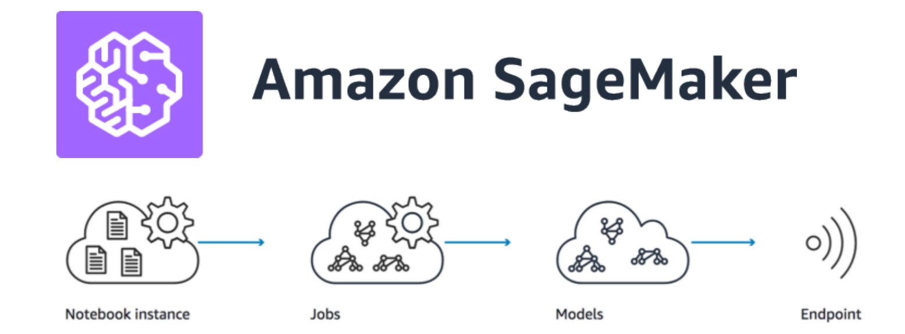
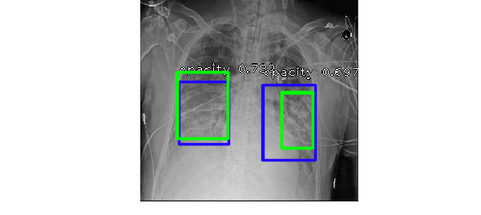

-
Automatic multiple object tracking with OpenCV

A while back I took the Udemy course Deep Learning and Computer Vision A-Z by Hadelin de Ponteves and Kirill Eremenko. One of the projects was object detection using the Deep learning model Single Shot MultiBox Detector (SSD). The SSD model showed significant improvement in detection speed due to the elimination of bounding box proposal and resampling of pixels, while achieving high accuracy[1]. I wanted to expand on that project and come up with a straightforward way to track the movement of detected objects across multiple classes in video feeds. This is the basis for applications like estimating distance, velocity, and traffic density.
After doing some research, I found articles on the awesome Pyimagesearch blog that offered example tutorials on object tracking. However, the examples I came across are either for tracking single-class object or not recording the object class. So I tweaked the codes to include multi-class object trackings based on the output of the SSD detection. For this post, I will share the custom functions that I came up with to integrate multiple class tracking using OpenCV.
-
When love is not enough

Source: Marion Fayolle, The New York Times. I cringe when I hear people quoting the statistic that half of all marriages end in divorce. Not only it's an outdated measure from a time in the 80s, it's also a glaring example of how popular culture has turned a multi-faceted phenonmenon into a misleading number devoid of any nuances. When I came across the data set National Longitudinal Survey of Youth 1979[1], I decided to wrap those numbers into interactive visualizations for the marriage trend of the boomer generation, and to show that context matters.
The patterns in these visualization are somewhat reminiscent of Eli Finkel's book The All-or-Nothing Marriage, in which he argued that American marriage has shifted from love-based to self-expressive[2], in an attempt to satisfy higher-level needs. As our society adjust to those changing expectations, he noted,
"The pursuit of self-expression through marriage simultaneously makes achieving marital success harder and the value of doing so greater."
-
Getting started with AWS SageMaker - Part II

In a previous post, I talked in details about using Amazon SageMaker as a Machine Learning service platform that eliminates the need for backend OS management, so users can focus on the machine learning part. An extension of SageMaker is that the model endpoint can be deployed as a public API through API Gateway with Lambda integration.
-
Handle with caution - making sense of the pandemic data

Source: Southern China Morning Post. In the span of the past month, the American public has been bombarded with numbers, charts, maps...and more charts on the spread of the Covid19 outbreak. While these metrics are helpful in providing an overview for a given region (e.g. county), the nature of the data and how they are collected makes it infeasible in coming up with accurate estimate or forecast of the infection curve. So it was surprising to hear that today Dr.Fauci changed the projection of the U.S. death toll to "more like 60,000", which is a big departure from the estimate of 100,000-200,000 he made just 11 days ago. It makes you wonder how they come up with that projection at the Institue of Health Metrics and Evaluation (which was used to support Fauci's forecast)?
Let's examine the limitation of the data available and shed light on why they are not meant to be used for modeling or forecasting the spread of the virus.
-
Getting started with AWS SageMaker - Part I
 The Amazon Sagemaker is touted as a crucial component for implementing Machine Learning as a Service, and it's a big part of the AWS Machine Learning Certificate program. Out of curiosity, I wanted to see how it works in practice, and how easy it would be to adopt the platform. This blog post is for anyone who wonders about the use cases for SageMaker and its advantages.
-
How to deploy a Flask app with ease

As a Data Scientist, I spend alot of time training, validating, and optimizing models. For a side project, I wanted to try deploying a Deep Learning (DL) classifier model to get my hands on the other layers of the Machine Learning tech stack. Building a web app is a great way to evaluate the feasibilty of the model design and work flow, while showing the value of the machine learning system. For this project, a DenseNet model was trained to predict 8 categories of skin lesions using dermascopic images and meta data (e.g., age, gender). The web app was build in Flask, wrapped in Docker, and deployed via AWS Elastic Beanstalk (EB). In this blog post, I will share the things I learned about the deployment process.
-
Feature Engineering - getting the most out of your data
Feature Engineering for Machine Learning (source: Udemy). Throughout my experience in Data Science, I think feature engineering is the one practical skill that didn't receive enough emphasis in textbook or other formal channel of learning (Docker is the other one). It wasn't until I started participating in Kaggle competitions when I realize the value of feature engineering in building machine learning models. Overall, feature engineering is a way to extract more insights from the data based on some domain knowledge (although it's been shown in some cases domain knowledge is not required), in a way that would improve the model's predictive power. This blog post will cover a few of the methods that I found to be useful.
-
A data sketch of the opioid epidemic
Photo Courtesy of AARP During the past few years, there has been exponentially increasing media coverage of the opioid crisis in the U.S., especially focusing on synthetic variety such as Fentanyl. The CDC estimates that the potency of the synthetic opioid is about 50-100 times as much as morphine, and it has been a lucrative merchandise for the cartel, leading up to the biggest Fentanyl bust recently at the Arizona border.
I came across opioid datasets from the Henry J Kaiser Family Foundation and economic data from the Bureau of Labor Statistics. Using these resources I wanted to examine the potential relationship betwee opioid death rate and economic downturn (i.e, unemployment rate) for each state[1]. Furthermore, the interactive line plot shows that every state has its own trends of mortality from different types of opioid.
-
RetinaNet lung opacity detection (with meta data)
 The Radiological Society of North America (RSNA) recently hosted a Kaggle competition, where Kagglers are asked to build a model to screen for marker of pneumonia by detecting lung opacity on chest radiographs. The standard practice for diagnosis of pneumonia is time consuming - requiring review of radiographs by trained professional, vital sign, and clinical history of the individual patient. The quality of the chest radiograph (CXR) also makes accurate diagnosis a challenging task, because the opaque features can be caused by pulmonary edema,bleeding, or fluid in the pleural space [1]. To quote the RSNA:
"They see the potential for ML to automate initial detection (imaging screening) of potential pneumonia cases in order to prioritize and expedite their review."
I tried out the RetinaNet object detector (implemented in Keras by Fizyr) on the image dataset, but unfortunately ran out of time to submit before the deadline. For this post, I will focus mostly on model performance and tradeoff associated with using meta data from the dicom image files. But before going into that, I will explain why I chose RetinaNet.
-
Bayesian approach and probabilistic programming
Source:XKCD comic. Most people working with statistical analysis are familiar with Bayes Theorem, but in doing probilistic programming there's a lot of nuances in implementing Bayes theorem. In this post I'll briefly summarize the Bayesian approach and show an example of working with mixed type of data (continuous and categorical) using Python's PYMC3 package (and there will be NO coin-flipping example).
September 8th, 2018 - 15 minute read -Looking Deeper with LIME

Many machine learning 'black boxes' are based on some flavors of neural network or deep learning building blocks, which makes model interpretability a challenging task. While the stakes are low if a convolutional neural net misclassifies a Shar Pei for a bath towel, it's a different beast if AI is performing automated medical diagnostics, making decisions on credit applications, or even finding 'Person of Interest' . The new EU general data protection regulation (GDPR), effective May 25th, 2018, requires a "right to explanation" for human subjects of AI/automated system[1]. This means a subject/consumer has the right to obtain an explanation of the automated decision, and the right to opt out of a decision based solely on AI/automated algorithm that produces legal effects on them (i.e, job recruiting, loan applications) without human intervention. Back in 2016, researchers (Ribeiro et al) from University of Washington published an algorithm called LIME that addresses the need for model interpretability and evaluation by explaining the predictions of any classifier in an intuitive manner. In this post, I will apply LIME to assess the DenseNet melanoma classifier by visualizing feature importance.
April 30th, 2018 - 10 minute read -Interactive chord diagram in D3
This post revisits the taxi ride data to make an interactive circos diagram in D3. Originally presented in 2009 by Martin Krzywinsk in his paper "Circos: an Information Aesthetic for Comparative Genomics.", it has become widely used and appreciated outside of the genomic/bioinformatic community. Its aesthetics and features effectively display relationships between different entities or patterns in periodic data. For the taxi data, it's actually quite simple to create a circos Chord diagram by tweaking existing codes shared by users (i.e, AndrewRP, nbremer) on https://bl.ocks.org/ , plus I will break down the essential elements of the chord diagram.
March 26, 2018 - 10 minute read -Imputing missing data

People vector created by rawpixel.com - www.freepik.com Missing data is a familiar problem when working with raw data. In this post, I will compare three widely used methods for imputing (a.k.a, estimating) missing values. This is really for my own reference, because I often find myself asking the question "which imputation algorithm would be most appropriate" while staring at those 'NA's in the dataframe. While there is NO 'best' way to deal with missing data because it depends on the type of problems, I usually avoid imputing using the mean/median/mode value. The reason being it doesn't take into account possible relationships between variables and it introduces bias to the data. As a general rule, I would not include a variable that has more than 40% missing values in building a predictive model.
Februaru 12th, 2018 - 15 minute read -Binary Classifier for Melanoma Using MobileNet

I recently read an article about a team of researchers (led by Dr. Andre Esteva) tuning a Deep Learning model(InceptionV3) to detect melanoma, showing promising results toward automated medical diagnostic application. CDC reports that in the year 2014, there were 76,665 Americans diagnosed with melanoma resulting in 9,324 deaths. Currently, dermatologists can recognize advanced melanoma using standard criteria such as Asymmetry, Border irregularity, Color variation, Diameter and Evolving shape (aka, ABCDE)[1]. In case if you are wondering how well your eyes can detect malignant lesion, here's a sample collage of pictures (I will admit that when I tried, it was as good as tossing a coin).
January 10th, 2018 - 10 minute read -Sparse PCA and XGboost for predicting tumor type
The Pan-Cancer intiative at The Cancer Genome Atlas (TCGA) Research Network has analyzed numerous types of tumor using different technologies to profile the genomic, transcriptomic and epigenomic landscapes. This body of work represents an approach to study cancers not only based on the organ of origin, but also the broader biomarker profiles [1]. For this post, high-throughput gene expression data are used to build a classifier for 5 tumor types: breast cancer, lung cancer, colorectal cancer, kidney cancer and prostate cancer. The public data was provided and maintained by TCGA, the raw RNA sequence data were normalized to Fragment per kilobase transcript per million mapped reads (FPKM) to adjust for differences in transcript lengths. The normalized data are compiled and hosted by UCI Machine Learning Repository.